|
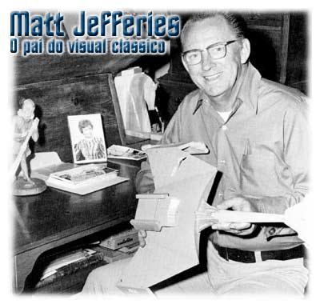
por
Fernando Penteriche
Com 80 anos recm
completados no ms passado, Walter Matthew Jefferies, mais
conhecido como Matt Jefferies, virou uma referncia no universo
de Jornada nas Estrelas.
Apesar de no ter trabalhado em nenhuma das sries modernas do
franchise, seu nome citado em diversos episdios. Mas no
como o homem que criou praticamente todos os designs da srie
original, desde a ponte de comando, passando pelas armas feiser,
at a prpria nave Enterprise. Jefferies virou referncia como
um tubo.
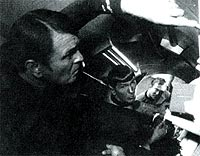 O
"tubo Jefferies", um corredor na vertical onde ficam
sistemas da nave e que os engenheiros passam boa parte do tempo
quando h algum problema foi uma idia que Matt usou na poca
da srie clssica para resolver um dilema. "Uma de minhas
maiores dificuldades", costuma contar Matt, " que eu
tinha diversas idias para o cenrio da engenharia, mas nunca a
verba disponvel ajudava. Um exemplo: eu tinha que arrumar um
lugar para Scotty ficar mexendo quando precisava arrumar as coisas
da Enterprise. E esse lugar no poderia ocupar uma sala inteira.
Resolvi ento criar um tubo com todo o tipo de coisas
complicadas, com fios e etc. Eu acredito que funcionou",
completa. "Algum resolveu dar meu nome ao tubo, e pegou !
Eu mesmo passei a usar 'tubo Jefferies' em alguns dos meus esboos
para o cenrio".
Jefferies comeou a trabalhar em Jornada nas Estrelas
quando Gene Roddenberry ainda nem tinha um escritrio ou secretria,
na poca das filmagens de "The Cage". Comeou
como um desenhista de sets. O diretor de arte da srie na poca
era Franz Bachelin. Pato Guzman, amigo de Desi Arnaz (marido de
Lucy Ball e um dos proprietrios do estdio Desilu, onde Jornada
era filmada) era o segundo diretor de arte. Jefferies criou, ainda
como desenhista de sets, a ponte de comando e o exterior da
Enterprise. Quando o estdio deu o sinal verde para Roddenberry
produzir um segundo episdio piloto, "Where No Man Has
Gone Before", Bachelin e Guzman haviam se desligado do
projeto, e Jefferies assumiu a condio de diretor de arte.
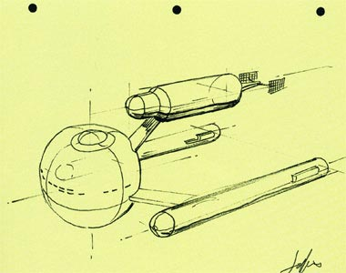
Para criar a nave mais
famosa da saga de Jornada Jefferies fez inmeros esboos,
comeando com uma nave mais achatada, depois com uma enorme bola
na frente e naceles inferiores e at chegar prximo ao desenho
que conhecemos muitos esboos foram feitos. Gene acompanhava de
perto e ia apontando o que mais gostava nos esboos.
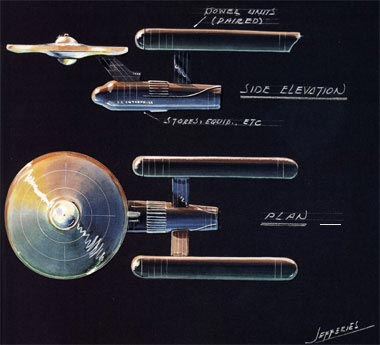
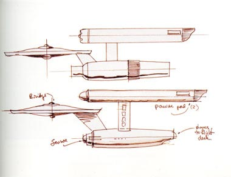
Juntando a imaginao
de Jefferies com as opinies de Gene, a USS Enterprise assumiu o
formato de um disco chato, um pescoo, uma espcie de
"turbina" abaixo com duas naceles na altura do disco. O
prefixo NCC 1701 foi criado tambm por Jefferies, como ele conta
a seguir:
"Ainda no havia sido decidido qual o prefixo ou nmero de
servio que a nave teria, ento eu resolvi dar Enterprise
minha prpria designao. Desde a dcada de 20, a letra N
indica 'Estados Unidos' em termos de marinha americana. A letra C
significava 'comercial'. Eu adicionei um C extra apenas por diverso.
NCC. Aps isso, eu teria de pegar alguns nmeros. Eles teria de
ser facilmente identificvel a distncia, logo os nmeros 3, 8,
6, 9 e 4 estavam fora. No sobraram muitos, ento 1701 foi uma
boa escolha. A razo pela escolha foi que a Enterprise seria a 17
nova nave da Federao, e a primeira de sua srie: 17-01."
Sobre o design exterior, Matt conta que sempre quis ficar longe do
estilo "disco voador", porm acabou prevalecendo que a
Enterprise tivesse uma seo disco. Aps ser informado por Gene
da idia da dobra espacial, Matt resolveu colocar motores enormes
e potentes (as naceles). E unindo tudo, um casco inferior secundrio.
Quando o escritor e produtor de Jornada Gene Coon criou uma
nova raa de inimigos, os Klingons, coube a Matt criar a nave dos
novos aliengenas. Jefferies criou o cruzador Klingon em casa,
pois como passaria tempo demais no estdio para fazer a criao,
resolveu levar todo o trabalho para casa e trabalhar 24 horas
direto. "Como os Klingons eram inimigos, resolvi criar uma
nave com um aspecto que logo ao v-la voc j poderia ter a
certeza de que no eram amistosos. Teria de ser ameaadora e
instigante", conta o desenhista.
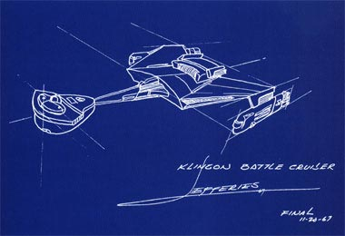
Enquanto trabalhava na
Srie Clssica, todos conheciam Matt como uma das pessoas
mais calmas e pacatas que trabalhavam no estdio. Quando os
produtores lhe diziam que a verba necessria para a construo
de determinado cenrio ficaria abaixo do necessrio, ao invs
de Jefferies reclamar ele simplesmente dizia frases como
"Bem... vamos ver o que consigo fazer ento". Na
terceira temporada Matt tinha que fazer mgica para construir
alguma coisa apresentvel com a dinheiro que estava destinado aos
sets. Jornada trabalhava com um oramento para um programa
de rdio e no de TV. Mesmo assim em episdios como "Spectre
of the Gun" pode-se notar a criatividade de Matt para
trabalhar com um baixo oramento.
A contribuio dele para Jornada nas Estrelas foi alm
do que foi mostrado na tela. Jefferies trabalhou na AMT
Corporation, responsvel pelos kits de plastimodelismo da
Enterprise original. O desenho do kit tambm foi criado por
Jefferies, e comeou a ser comercializado em janeiro de 1967. O
mesmo ocorreu com o cruzador Klingon.
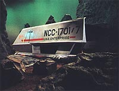 Matt
tambm criou a nave auxiliar Galileo 7 em Jornada e
participou do processo para criar o kit de montar que tambm foi
vendido pela AMT. Enquanto a srie estava no ar, Jefferies
recebia uma participao na venda dos kits, mas depois que a srie
foi cancelada Matt no recebeu mais um tosto.
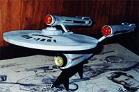 Em
alguns episdios da srie original, quando havia a necessidade
de mostrar outra nave da classe Constitution que no fosse a
Enterprise, kits de montar da AMT foram utilizados. Era muito mais
barato do que construir novas maquetes.
Depois de Jornada, Matt Jefferies ainda trabalhou em
diversas sries da televiso americana, entre elas
"Dallas". Depois dele, Andrew Probert, Rick Sternbach,
Greg Jein e John Eaves seguiram seus passos nas sries seguintes
e filmes de cinema de Jornada. Mas para todos eles, como
sempre dizem em entrevistas, Matt Jefferies um artista lendrio.
Os interiores da
Enterprise ganham vida nas
mos talentosas de Matt Jefferies
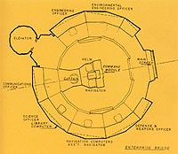
A ponte de comando
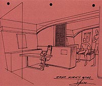
Os aposentos do capito Kirk
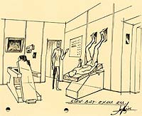
A enfermaria
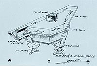
A mesa da sala de reunies
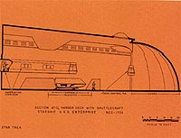
O hangar de naves auxiliares
Jefferies era mestre na arte
de criar naves
para os episdios da srie original
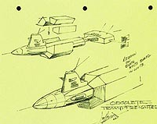
A Botany Bay, nave de Khan
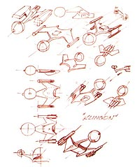
Rascunhos do cruzador Klingon
O artista, calmo e
consciente, fazia milagres
com o oramento risvel do programa
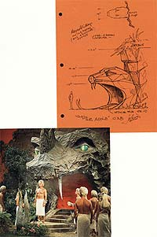
Projetando Vaal, e o resultado
O crdito
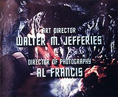
A lenda
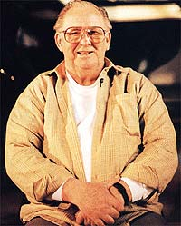
Walter Matthew Jefferies
|


{kind=link}
{kind=link}
{kind=link}
{kind=link}
{kind=link}
{kind=link}
{kind=link}
{kind=link}
{kind=link}
{kind=link}
{kind=link}